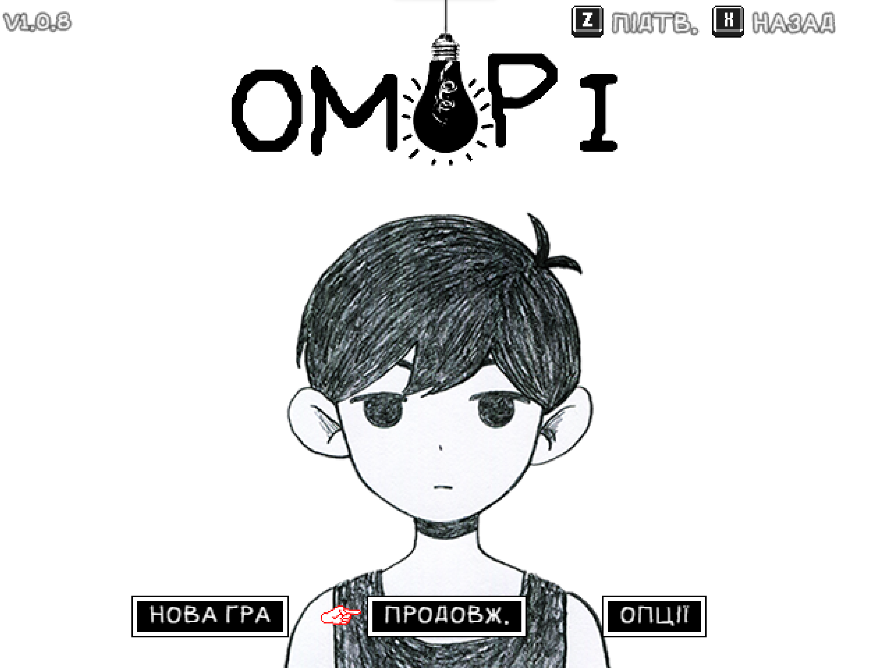
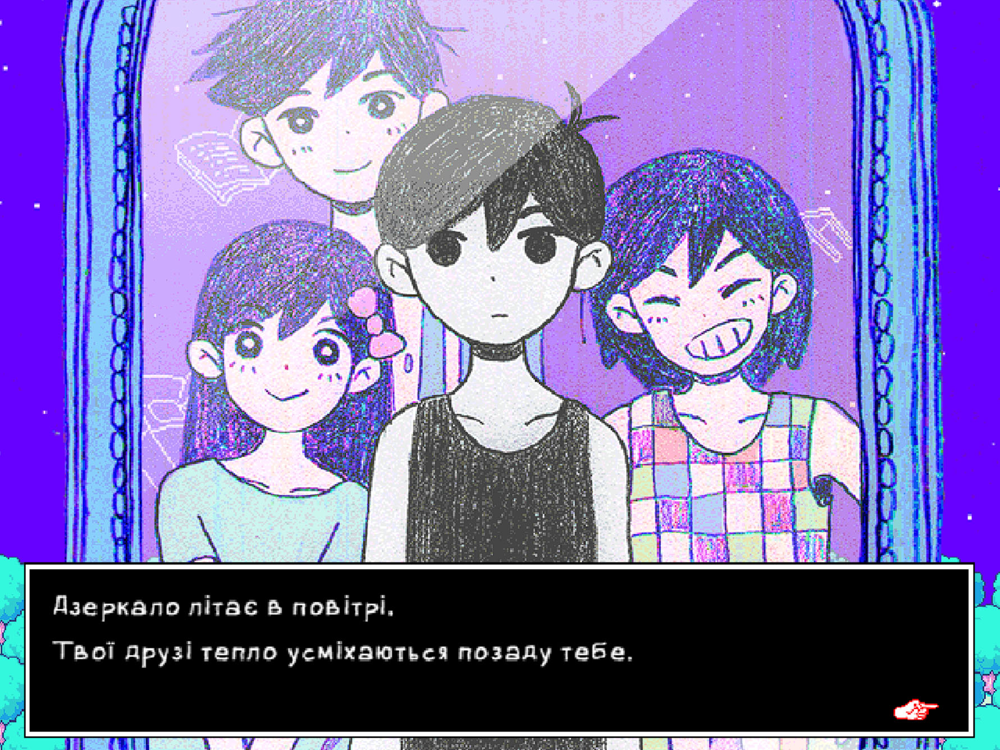
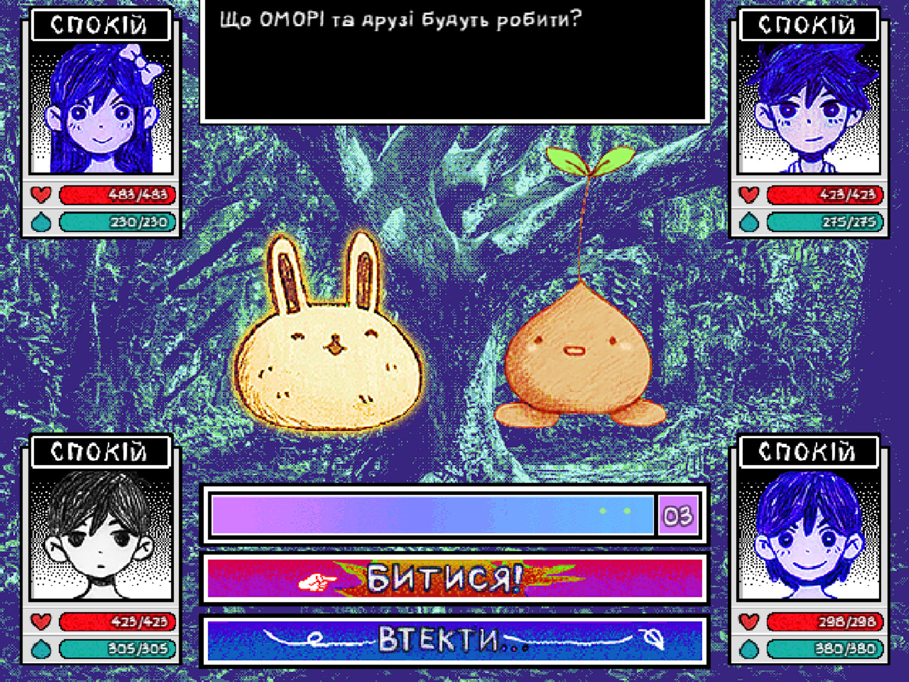

Переклад виконано з особливою увагою до деталей: адаптовано всі діалоги, меню, графічні елементи та навіть мініігри. Ми прагнули зберегти стиль, гумор і настрій оригіналу, щоб OMORI звучала природно та автентично українською.
OMORI — це психологічна інді-гра з елементами JRPG про жах травми, втечу від реальності й прийняття болючих спогадів. Вона поєднує милий візуальний стиль із глибокими темами, сильним сюжетом і важкими моральними виборами.



LBK Launcher — це найлегший спосіб інсталювати нашу локалізацію на OMORI. Завдяки ньому, ви маєте можливість встановити переклад автоматично, здійснивши при цьому кілька кліків!
Цей спосіб вимагає встановлення мод-лаунчера "OneLoader", який ви можете завантажити за посиланням нижче.
Увага! В українізаторі використовується патч для запуску OMORI на процесорах Apple Silicon (M1/M2/M3 і т.д.). Можливі проблеми зі стабільністю гри, оскільки офіційної підтримки macOS ARM немає. Якщо виникають збої — спробуйте перезапустити гру.